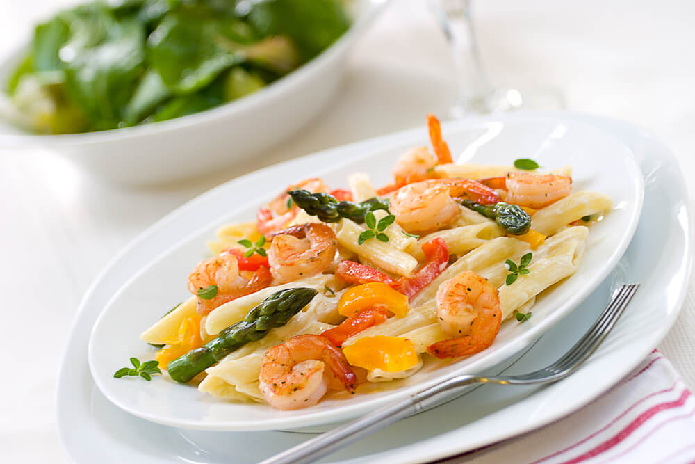

Home
Peppered shrimp Alfredo
Description
Peppered Shrimp Alfredo is a pasta dish featuring shrimp seasoned with spices like cayenne, black pepper, or paprika tossed in a creamy Alfredo sauce. Common variations include adding red bell peppers, mushrooms, garlic, or using coconut cream for a Caribbean twist.

Ingredients
- 12 ounces penne pasta
- ¼ cup unsalted butter
- 2 tablespoons extra-virgin olive oil
- 1 onion, diced
- 1 red bell pepper, diced
- 8 ounces portobello mushrooms, diced
- 2 cloves garlic, minced
- 1 pound medium shrimp, peeled and deveined
- 1 (15 ounce) jar Alfredo sauce
- ½ cup grated Romano cheese
- ½ cip heavy cream
- 1 teaspoon cayenne pepper, or more to taste
- salt and ground black pepper to taste
- ¼ cup chooped flat-leaf parsely
Steps
- Bring a large pot of lightly salted water to a boil. Add penne and cook, stirring occasionally, until tender yet firm to the bite, 8 to 10 minutes; drain.
- Meanwhile, melt butter with olive oil in a saucepan over medium heat. Add onion; cook and stir until softened and translucent, about 2 minutes. Stir in bell pepper, mushrooms, and garlic; cook over medium-high heat until soft, about 2 minutes.
- Add shrimp; cook until firm and pink. Stir in Alfredo sauce, Romano cheese, and cream; bring to a simmer, stirring constantly, until thickened, about 5 minutes.
- Season with cayenne pepper, salt, and black pepper. Stir in penne. Sprinkle servings with parsley.